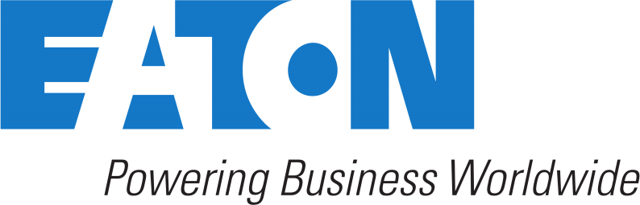
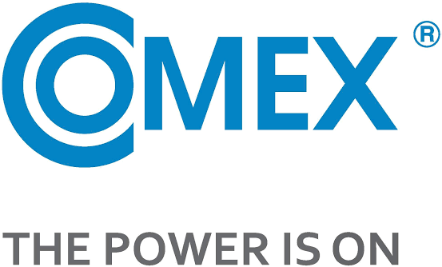

Predaj, inštalácia a servis záložných zdrojov napájania. Chráňte svoje zariadenia, dáta a prevádzku pred výpadkami a kolísaním elektrickej siete.
Dlhodobo sa venujeme zaobstarávaniu záložných zdrojov UPS presne dimenzovaných pre potreby danej prevádzky.
Pomôžeme vám vybrať správny typ a výkon UPS podľa charakteru záťaže, vykonáme inštaláciu a postaráme sa aj o pravidelnú údržbu vrátane výmeny batérií.
IT infraštruktúra ako serverovňe a dátové centrá; Zdravotnícke zariadenia; Laboratória a výskumné centrá; Pokladničné, kamerové a zabezpečovacie systémy. Výrobné strediská používajúce CNC prístroje alebo 3D tlačiarne.
Či potrebujete návrh pre vašu infraštruktúru, alebo hladáte servis pre vašu UPS, obrátte sa na nás.
Kontaktovať ohľadom UPSUPS (Uninterruptible Power Supply) je zariadenie určené na zabezpečenie stáleho a konzistentného napájania. Energetická infraštruktúra môže byť nespoľahlivá. Výkyvy napätia spôsobené nábehom energeticky náročných prístrojov v sieti môžu spôsobiť poruchy pri zariadeniach citlivých na stabilné napájanie.
Podobne kritický je celkový výpadok elektrickej energie, ktorý môže spôsobiť stratu dát, poškodenie zariadení alebo odstávku celej prevádzky. UPS tieto riziká eliminuje – preklenie výpadok, vyhladí výkyvy napätí a poskytne čas na bezpečné vypnutie systémov alebo nábeh generátora.
UPS je zložené z riadiacej jednotky, ktorá kontroluje prichádzajúce napájanie zo siete, a kolekciou batérií, ktoré slúžia ako záloha napájania v prípade oslabenia/poruchy siete. Štandardne existujú dve populárne riešenia zapojenia UPS do siete, podľa čoho sa rozlišujú typy UPS na:
Oba tieto typy regulujú prichádzajúce napätie, aby nenastali výkyvy. Line interactive UPS štandardne prepúšťa napájanie zo siete, pričom ho mierne reguluje, aby bolo stabilnejšie.
V prípade veľkých výkyvov, alebo celkového výpadku napájania prejde UPS do zálohového stavu, kedy plne nahrádza sieť. Toto prehodenie stavov vytvára pri Line interactive UPS oneskorenie 2-10ms, čo môže byť pre niektoré citlivejšie systémy neakceptovateľné. Z tohto dôvodu sa v takýchto prípadoch používa Online UPS, pri ktorej je napájanie plne nahrádzané batériami, ktoré sú aktívne dobíjané zo siete, a teda nevzniká oneskorenie.
Treťou možnosťou je Offline UPS, táto však vôbec nereguluje prichádzajúce napájanie, a len funguje ako záloha s oneskorením v prípade výpadku siete. Výhodou je nižšia cena, nie je však vôbec vhodná pre oblasti s výkyvmi siete a pre citlivú infraštruktúru.
Každý prístroj má iný charakter nábehového a prevádzkového zaťaženia. Výkon UPS závisí práve od tohoto charakteru záťaže. Nábehovo náročné systémy môžu potrebovať väčší výkon, aby UPS zvládlo ich rozbeh. Pri výpadku siete batérie plne prevezmú úlohu napájania. Sú však obmedzené dobou zálohy, ktorá je priamo ovplyvnená množstvom batérií. Systém by mal byť dimenzovaný tak, aby zálohová doba poskytla dostatok času na spustenie záložných generátorov, alebo na bezpečné ukončenie procesu.

